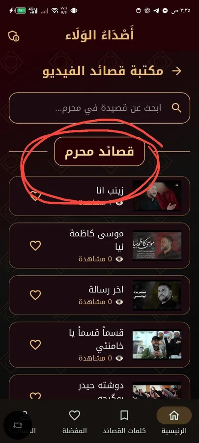

C.S MUDATHR MUSLIM
غير متصللوحة التحكم الشاملة ✦
عدّل موقعك من الموبايل أو الحاسبة، بدون كتابة كود.
ربط آمن بحسابك على GitHub
موقعك مستضاف مجاناً على GitHub Pages. لتعديل ملفاته من الموبايل، تحتاج رمز وصول خاص بالمستودع؛ ما نخزّن الرمز في الموقع أو المتصفح، ويبقى في الذاكرة إلى أن تغلق الصفحة.
مرة واحدة لإنشاء الرمز:افتح GitHub وأنشئ Fine-grained token، واختار Only select repositories → cs-mudathr-muslim، وخلي صلاحية Contents: Read and write فقط. حدّد مدة انتهاء قصيرة.إنشاء رمز وصول في GitHub ←
⚠️ لا تشارك الرمز بأي شخص، ولا تدخله إلا على رابط موقعك الصحيح. لوحة الإدارة عامة للعرض، لكن الحفظ محصور بمن يملك صلاحية GitHub.
01 / تحرير المحتوى
النصوص والعناوين
كل تغيير يظهر على الموقع بعد الضغط على «حفظ ونشر».
02 / الهوية البصرية
الألوان والتصميم
غيّر هوية موقعك من غير التأثير على تطبيق مسلم مراد.
التغييرات على الموقع فقط؛ لا تغيّر ألوان تطبيق Android.
03 / الوسائط
الصور والشعار
اختار صورة من الموبايل وارفـعها للموقع مباشرة.
شعار تطبيق مسلم مراد

صورة واجهة التطبيق
ارفع الصورة ثم اضغط «حفظ ونشر» بالأعلى. الملفات تُرفع إلى مستودعك، ولا تُرسل إلى أي خدمة خارج GitHub.
04 / تنزيلات التطبيق
إدارة زر التحميل
غيّر الرابط إلى إصدار APK منشور وموثوق على GitHub.
لا يفعّل هذا الحقل رفع APK؛ لازم ترفع نسخة موقّعة بمفتاح نشر دائم إلى GitHub Releases قبل وضع الرابط هنا.
05 / ترتيب الظهور
إظهار وإخفاء الأقسام
أخفي أي قسم من واجهة الموقع مؤقتاً، وارجعه بأي وقت.
إخفاء قسم التحميل يخفيه من الصفحة فقط، ولا يمسح APK من GitHub.
معاينة فورية للعناوين
تجربة استماع ومشاهدة
تليق بالقصيدة الحسينية.